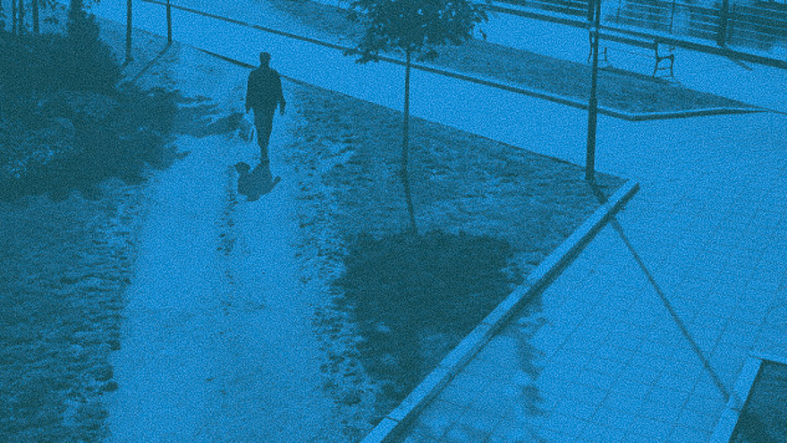
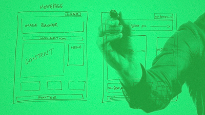

Interaction design
People ignore design that ignores people. – Frank Chimero
User Experience: You might have to cut corners, to take the user in consideration – give them what they need.
Interaction design (IxD) is a practice within digital design. It involves designing digital interactive solutions, hereunder screen-based products, environments, services or ubiquitous artifacts. It is primarily focused on the interaction between the user and the product and as such also human behaviour.
It is broadly defined, and IxD incorporates many branches of design; such as aesthetics, usability and other themes within user experience.
Interactive design processes often incorporate methods and tools such as sketching, prototyping, personas and empathetic user-centered approaches.
Gurus within the field include Bill Buxton, Don Norman and others.
Read more:
Interaction-design.org
Don Norman
Wireframing: Make a visual guide that represents the skeletal framework of your web-service before actually building it.
IxD in industry
CIID project exampleCIID, in cooperation with Space 10 and IKEA developed “Smart” - a dynamic art-based solution.
Sustainable living at home by maintaining your art. The art piece receives real-time information from water and heating sensors around your home and adjusts its appearance based on your consumption. The blue and red coloured layers (water and heat) fade out and turn into white when the user exceeds sustainability guidelines for consumption, leading the art piece to lose contrast.
“Smart” is the result of an iterative design process. The process included interviews, cognitive mapping, future scenarios, brainstorming and tangible data visualisation.
IxD at DMD
In this project they explored how interactive shadows affected the aesthetic experience of an architectural space. To understand this, they built a prototype and set up a series of experiments with follow-up expert interviews based on the pragmatist aesthetics framework.
When continuous motion is detected over a short range of time by the PID, the pattern will increase its velocity. With the LED’s wrapped around the trunk, VitalShades creates shadows on its surroundings that are formed by the shape of the leaves. These shadows move about as a result of the light pattern.
The research indicated that the prototype is capable of affecting the atmosphere in a room through a dynamic relationship with the user, and that it can give the plant a means for expressing itself.
Project: VitalShades. A participant interacting with a prototype consisting of a plant, peer sensor, LED-strip and an Audrino.